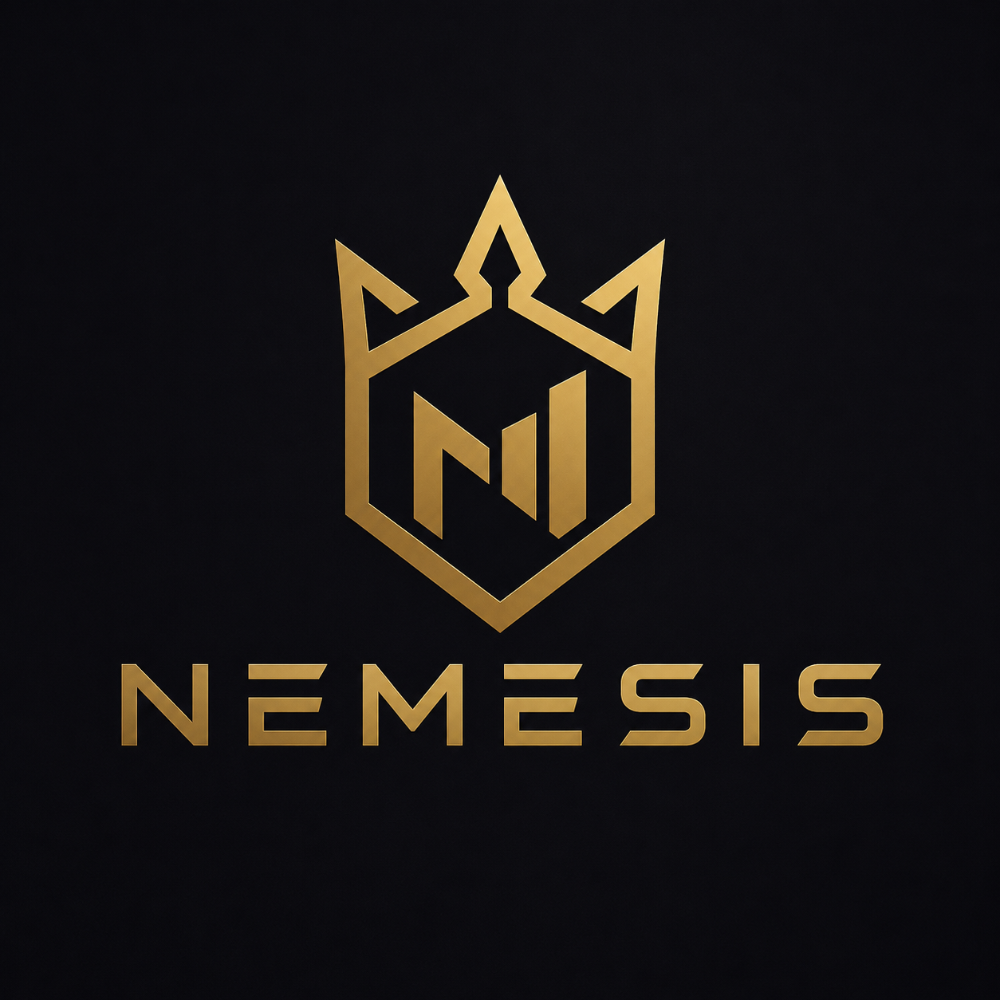

Némésis
Tableau de bord
Connexion…
↻
Mes bots
Activité — commandes / jour
Commandes les plus utilisées
Joueurs suivis
Activité récente
Bot hors ligne
Impossible de joindre l'API des stats.
Lance Némésis, puis clique sur ↻.